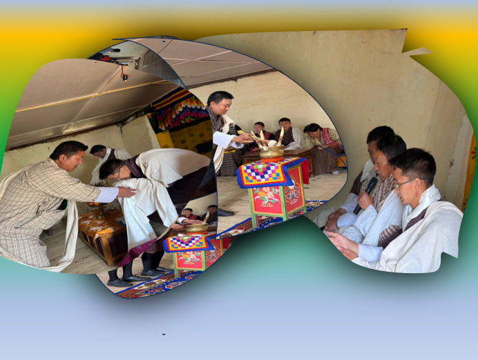
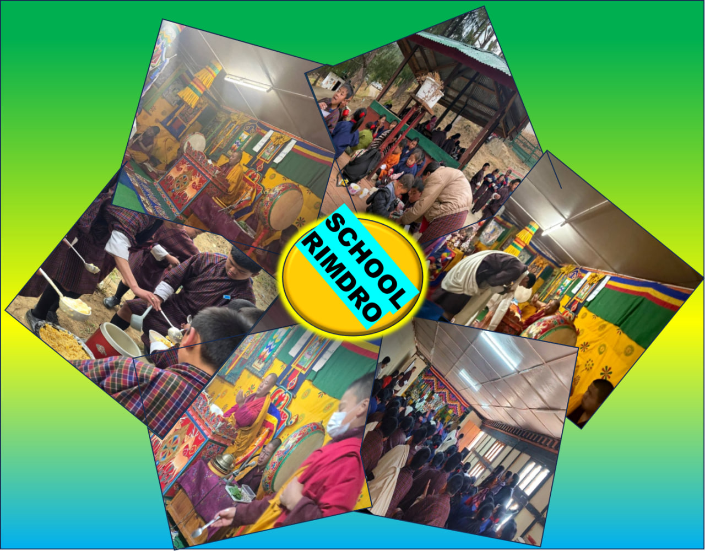

Programs
Honoring the 5th King's Birthday

Participating in the celebration of His Majesty's 46th birth anniversary on February 21st with the Doteng family was a deeply moving experience. As a trainee teacher, this moment held special significance. It was a proud transition from celebrating this day as a student to now celebrating it as an educator, embodying the path His Majesty envisions for our youth: to serve and contribute to the nation. This shift underscored the responsibility and honor of shaping young minds and instilling in them the values of service and dedication that His Majesty exemplifies.
The day's celebration commenced in the school prayer hall with a solemn prayer and the offering of butter lamps, symbolizing wishes for His Majesty's continued good health, happiness, and enduring success. The atmosphere was filled with reverence and gratitude. The school's girl captain, Tshering Choden Zangmo, delivered a thoughtful speech, highlighting the importance of the day and its significance in the context of our national identity and values. The Principal's address further elaborated on the significance of the day, reinforcing the themes of national pride, loyalty, and the importance of striving for excellence in all endeavors. The program culminated in a communal sharing of tea and snacks, fostering a sense of unity and celebration among the school community. It was a day filled with reflection, joy, and a renewed commitment to the principles His Majesty embodies.

Warm Welcome
On March 4th, 2026, I was so grateful as all the teachers and students formally welcomed me, my two TP teacher colleagues, and the new science teacher into the Doteng school family. The day was marked by a humble ceremony of བཞུགས་གྲལ་ཕུན་སུམ་ཚོགས་པ (Zhudre Punsum Tsokpa), where we were embraced with respect and joy, expressing hopes that our journey would be filled with inspiration, collaboration, success, and excellence. It was a moment of genuine happiness and one of the most unforgettable days for me as I stepped into my teaching journey. The ceremony underscored our collective excitement and commitment to fostering a supportive and enriching environment for all members of the school.

School Rimdro

Friday began early with school Rimdro. I reported to school at the start of the day to take part in the morning Rimdro ritual, and afterwards I spent time in the kitchen assisting two cooks as they prepared tea and arranged lunch for the students, an experience that reminded me how much behind-the-scenes work is needed to keep a school running smoothly. In the afternoon, two of my TP classmates and I resumed volleyball training, organizing the session so that all four houses could practice in turn, guiding students through drills and scrimmages, and taking responsibility for coordinating the schedule and maintaining a positive, disciplined atmosphere as we prepared everyone for the upcoming house-league matches.
School also celebrated the badge awarding ceremony for the school leaders during school Rimdro and celebrated World Oral Health Day.
First Parent-Teacher Meeting (PTM)
On March 14th, our school successfully held its first Parent-Teacher Meeting (PTM) for the 2026 academic year, marking a significant step in fostering a strong school-home partnership. The day began with the punctual arrival of parents, students, and teachers at 8:00 AM, followed by a morning assembly at 8:30 AM, setting a positive tone for the day's events. Parents were then thoughtfully directed to their respective classrooms, ensuring a focused and organized environment for the discussions ahead. While the parents engaged in the meeting sessions, the students participated in a school-wide cleaning initiative, promoting a sense of responsibility and community.
The core of the PTM revolved around Zoom meetings, with each class teacher taking the lead in presenting to the parents. The non-class teachers provided invaluable support, assisting with the smooth conduct of the meetings; I had the privilege of assisting the Class 8 teacher. The discussions covered the academic and non-academic achievements of the students in 2025, as well as the plans and expectations for 2026. Neten sir provided an insightful overview of the school's diverse programs and activities, extending beyond academics. He used a comprehensive PowerPoint presentation to showcase the school's games and sports programs, from traditional Bhutanese games to modern sports, as well as cultural activities, scouting programs, value education initiatives, and physical exercises. This comprehensive approach highlighted the school's commitment to holistic education.
The Principal emphasized the crucial role of parents in guiding their children, addressing the risks and vulnerabilities students face with modern technology and the upcoming monsoon season. The PTM not only focused on the educational aspects of the students but also underscored the strong partnership between parents and the school. This collaboration is essential in creating a nurturing and supportive environment, ultimately helping to shape the best possible future for our students. The session concluded around 2:00 PM with tea and snacks, providing a moment of camaraderie for teachers, parents, and students alike, solidifying the collaborative spirit that defines our school community.